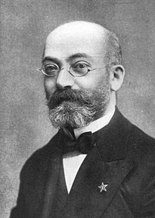

Mi estas Esperantisto berarti Saya adalah seorang yang berbahasa Esperanto. Esperanto sendiri adalah sebuah bahasa yang muncul di akhir abad ke-19. Diciptakan oleh L. L. Zamenhof, bahasa ini cukup mudah dipelajari dan berpotensi menjadi bahasa universal (karena bahasa ini bukan bahasa Ibu siapapun). Jika anda tertarik mempelajari Bahasa Esperanto, silahkan klik tab "Lernu"di sebelah atas kanan
Esperanto dikembangkan pada 1877-1885 oleh L.L. Zamenhoff. Setelah sekitar sepuluh tahun perkembangannya, pada 26 Juli 1887 dia menerbitkan Unua Libro, tata bahasa pertama dari Esperanto, di Rusia, diikuti oleh versi dari beberapa bahasa lain dari tahun 1887 sampai 1889. Jumlah penuturnya berkembang pada dekade dekade selanjutnya, pada awalnya sebagian besar hanya di Kerajaan Rusia dan Eropa Timur, lalu merambah ke Eropa Barat dan lalu ke Amerika. Pada dekade dekade awal penutur Esperanto biasanya berhubungan satu sama lain melalui majalah dan korespondensi. Pada tahun 1905 Kongress Esperanto Dunia diadakan di Boulogne-sur-Mer, Perancis sejak itu kongres dunia diadakan setiap tahun kecuali ketika perang dunia.
Kata 'Esperanto' sendiri berarti "seseorang yang berharap" di dalam bahasa Esperanto. Kata tersebut digunakan oleh Zamenhof sebagai nama samaran di buku pertamanya. Lambat laun istilah tersebut digunakan untuk menyebut bahasa itu sendiri.
Secara linguistik, bahasa Esperanto tidak lebih baik (superior) atau kalah baik (inferior) daripada bahasa-bahasa lain, buatan maupun tidak. Beberapa kelebihan yang dimiliki bahasa Esperanto yang tidak dimiliki bahasa lain antara lain:
Segala klaim bahwa bahasa Esperanto lebih mudah dipelajari sekali lagi tidaklah mungkin dibuktikan dengan pasti, karena sekali lagi, tidak ada bukti yang dapat digunakan untuk hal tersebut.
Fitur-fitur yang dimiliki bahasa Esperanto:
Jumlah pengguna bahasa Esperanto sulit untuk dihitung, karena sensus secara menyeluruh di dunia sulit untuk dilakukan. Perkiraan yang paling dekat yaitu sekitar dua juta pengguna. Wikipedia berbahasa Esperanto [eo.wikipedia.org] memiliki artikel sebanyak 86.846 sekitar tahun 2001, jauh lebih banyak daripada Wikipedia berbahasa Indonesia yang pada tahun 2007 "hanya" memiliki 64.514 artikel. Jumlah dua juta pengguna bahasa ini dapat ditarik dari banyaknya penjualan teks atau karya literatur yang menggunakan bahasa tersebut, banyaknya jumlah tulisan di Internet, dan lain sebagainya. Jumlah dari sumber-sumber lain berkisar antara sepuluh ribu (oleh lawan-lawan Esperanto) hingga tiga puluh atau empat puluh juta (oleh pengguna antusias Esperanto).
Pada tahun 1927 ketika populasi bumi sekitar dua miliar orang, Dr. Johannes Dietterle dari Reich Institute fur Esperanto di Leipzig menyelenggarakan survei dimana ia memperkirakan jumlah pengguna Esperanto ada sekitar 128.000 orang. Saat ini populasi bumi sekitar enam miliar orang, dan perkiraan jumlah pengguna Esperanto ada sekitar dua juta orang. Dari data tersebut dapat disimpulkan bahwa pengguna Esperanto meningkat sangat pesat dalam kurun waktu 80 tahun.
 L. L. Zamenhoff L.L. Zamenhoff dilahirkan di Bialystok, Polandia (pada waktu itu masih bagian dari Rusia). Ia tumbuh berkembang di tengah-tengah komunitas yang poliglot, yang membuatnya berpikir bahwa diperlukan sebuah bahasa pemersatu yang akan mengakhiri permasalahan-permasalahan yang ditimbulkan akibat adanya berbagai macam bahasa yang seringkali menimbulkan konflik dan kerisuhan. Ia menolak bahasa-bahasa besar yang ada pada saat itu (Perancis, Jerman, Inggris, Rusia) karena mereka susah dipelajari dan akan menempatkan pengguna bahasa tersebut pada posisi yang lebih diuntungkan daripada orang lain; ia juga menolak dua bahasa "mati" yang mana ia kuasai, Latin dan Yunani, karena mereka lebih susah dipelajari dan dikuasai daripada bahasa-bahasa yang lain. Ia mulai mengembangkan bahasa yang ia rencanakan sendiri, yang pada akhirnya ia sebut dengan sebutan "Lingvo Internacia", pada waktu ia mulai masuk SMA, sampai puncaknya ketika ia menerbitkan buku pengantar bahasa buatannya (untuk pembaca berbahasa Rusia). Pada waktu yang hampir bersamaan, ia juga menikah dan memulai karier kedokterannya.